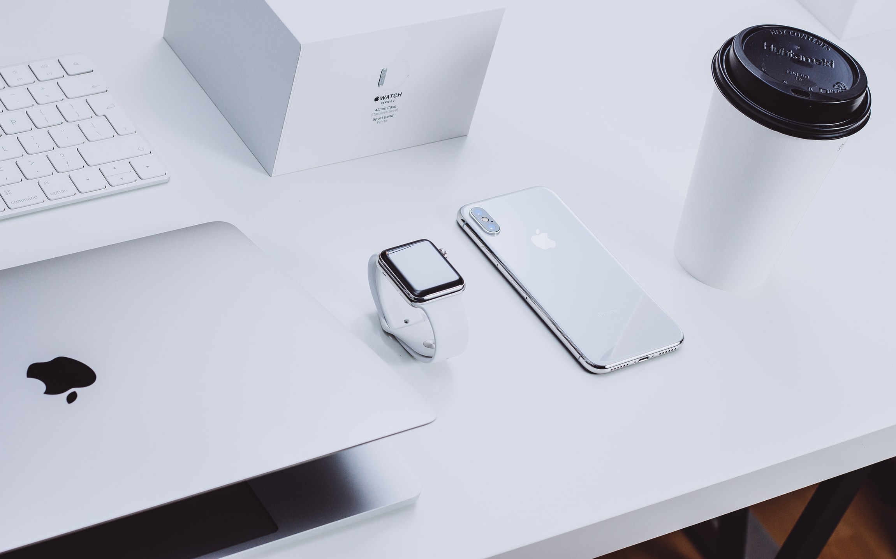

1976년 스티브 워즈니악, 로널드 웨인과 함께 애플을 공동 창업하고, 애플 2를 통해 개인용 컴퓨터를 대중화했다. 또한, GUI와 마우스의 가능성을 처음으로 내다보고 애플 리사와 매킨토시에서 이 기술을 도입하였다. 1986년 경영분쟁에 의해 애플에서 나온 이후 NeXT 컴퓨터를 창업하여 새로운 개념의 운영 체제를 개발했다. 1996년 애플이 NeXT를 인수하게 되면서 다시 애플로 돌아오게 되었고 1997년에는 임시 CEO로 애플을 다시 이끌게 되었으며 이후 다시금 애플을 혁신해 시장에서 성공을 거두게 이끌었다. 2001년 아이팟을 출시하여 음악 산업 전체를 뒤바꾸어 놓았다. 또한, 2007년 아이폰을 출시하면서 스마트폰 시장을 바꾸어 놓았고 2010년 아이패드를 출시함으로써 포스트PC 시대를 열었다.
my name is hoon